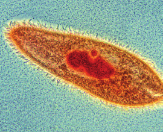
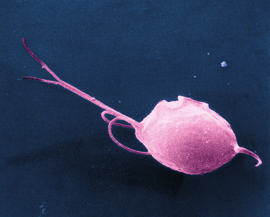
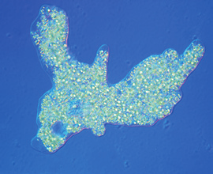
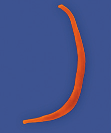
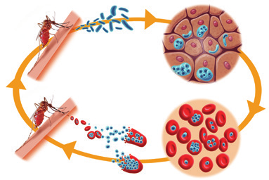

Se mueven gracias a los cilios. El paramecium es un ejemplo.

Vista microscópica de un paramecio
Flagelados
Se desplazan mediante flagelos. Trichomonas causa vaginitis.

Vista microscópica de un protozoo flagelado
Rizópodos
Se desplazan a través de pseudópodos. Un ejemplo lo proporciona la ameba.

Vista microscópica de un rizópodo
Esporozoos
Son inmóviles. Plasmodium produce la malaria.

Vista microscópica de un nematodo
Protozoos que causan enfermedades
Algunos protozoos pueden causar graves enfermedades a las personas.
La malaria o paludismo tiene su origen en varias especies de esporozoos del género Plasmodium. La picadura del mosquito Anopheles transmite la enfermedad. El protozoo destruye los glóbulos rojos del afectado.
La enfermedad del sueño se debe a protozoos del género Trypanosoma. Se transmite de los enfermos a las personas sanas mediante la picadura de la mosca tsetsé. El protozoo se desarrolla en los sistemas circulatorio y nervioso.

Ciclo de vida de un patógeno transmitido por mosquitos